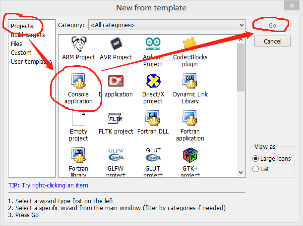

原文连接:https://www.cnblogs.com/lexyao/p/11627789.html
0.前言
在当前的行业发展和国际形势下，让更多的程序员思考跨平台编程问题。在众多的跨平台开发环境中，Code::Blocks具有独特的优势。
近二十年来，跨平台开发环境曾经如雨后春笋般产生，但是，由于后继乏力，逐渐销声匿迹者颇多。作为程序员，熟悉一个平台需要消耗大量的精力，把编写的程序移植到另一个平台也需要很大的精力。能够选择一个持久得到支持的开发环境，是一个长期从事软件开发的程序员需要考虑的。
在众多的跨平台开发环境中，Code::Blocks无疑是其中的佼佼者，特别是期望使用wxWidgets的程序员更是首选。
1.搭设Code::Blocks开发平台（安装）
1.1 下载Code::Blocks安装程序
下载地址：http://www.codeblocks.org/downloads
在这个下载地址中，提供了两种可下载的形式：
Download the binary release：提供Code::Blocks发布版本的下载，下载后直接安装使用。建议初学者和一般的使用者选择这个下载（推荐）。
Download the source code：提供Code::Blocks源代码的下载。下载后经过编译后构建Code::Blocks开发环境。对于有一定功底的，想构建自己的开发环境、添加新的功能或者学习相关的编程技巧的可以选择这个。
进入下载页面，对于在win下使用的程序员来说，有以下（如图）选择：
选项①：仅有Code::Blocks开发环境，没有编译器。如果选择了这个，需要自己另外下载安装编译器程序。对于需要配备自己的编译器或者需要64bit的程序员可以选择这个。
选项②：有Code::Blocks开发环境，并配备了GCC/G++ 编译器和 GDB调试器。codeblocks-17.12mingw-setup.exe 配备的是 TDM-GCC (version 5.1.0, 32 bit, SJLJ)。对于开发32 bit的程序员或者初学者可以选择这个。安装后可以直接使用。
1.2 安装Code::Blocks
运行下载的安装程序。由于只是体验，用上图中的②（codeblocks-17.12mingw-setup.exe）就可以了。
安装的过程中可以一路“Next”，直到“Install”后等待安装完成。
1.3 配置默认编译器
初次运行Code::Blocks需要选择默认的编译器。
安装Code::Blocks完成时会出现提示窗口，问是否运行Code::Blocks。如果你选择“是”，就会运行Code::Blocks。
或者，你退出结束安装后，点击安装Code::Blocks的图标运行Code::Blocks。
运行时会出现如下提示窗口，你选择“OK”就可以了。
2.体验用Code::Blocks编写C++程序
2.1 认识Code::Blocks
如果你觉得你的英语还过得去，可以先通过帮助文件对Code::Blocks主界面有一个一般性的了解。或者，你以后慢慢的熟悉。
获得帮助文件的途径是：点击Code::Blocks主菜单的Help中的CodeBlocks，会打开帮助文件codeblocks.chm。其中的“CodeBlocks Project Management”条目下有大概的介绍。
2.2 新建一个控制台程序
几乎每一个讲C或C++入门的第一个例子都是hello world。按以下步骤创建一个控制台程序（hello world）：
第一步：打开新建项目向导
有两种方法：
①主菜单：File->New->Projects
②点击Start Here页面中的Create New Project
第二步：在向导中选择项目类型Console application

第三步：选择C++类型文件，点击Next
第四步：输入项目名称、文件
选择文件保存位置，输入项目标题后，项目文件名自动按标题生成。
第五步：选择编译器
这一步保持默认就可以了，直接点击Finish就行了。

点击Finish就会出现以下内容，这就是你的第一个程序。
只要你学过C或者C++，一定对这段代码再熟悉不过了。
第六步：编译运行
点击上图中的编译运行按钮，就会执行编译过程。Code::Blocks右下角的窗口中有两个选项卡，分别是编译日志和编译信息。如果编译出错，会在这里出现红色的错误信息。如果是代码错误，编译结束后，点击错误信息，代码窗口会跳转到出错的代码行。
只要不出现错误，编译链接完成后就会运行程序，出现以下窗口
3.结束语
OK！初次体验完成了！很简单吧？
其实，这只是一个开始，要想完成具体的编程工作，还需要更多的知识和经验。
如果只是学习，你就可以开始了。尝试用你所学的C或C++语言的知识，修改main,cpp中的代码，然后，编译运行，看输出的是不是你预期的结果。